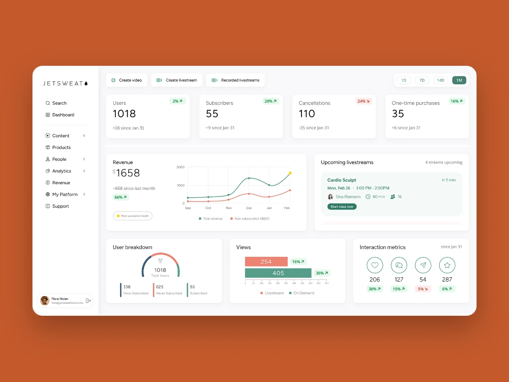
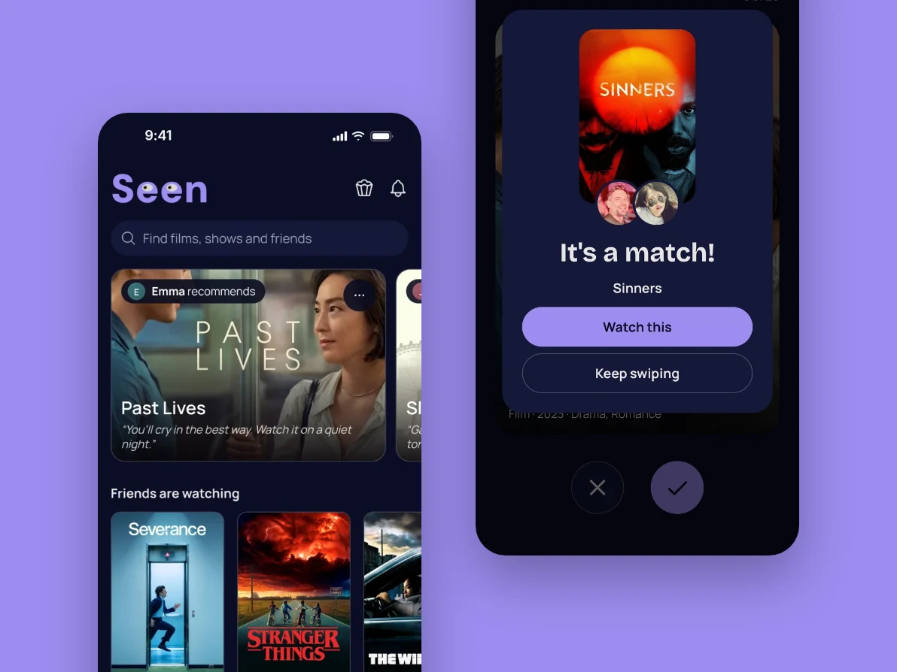
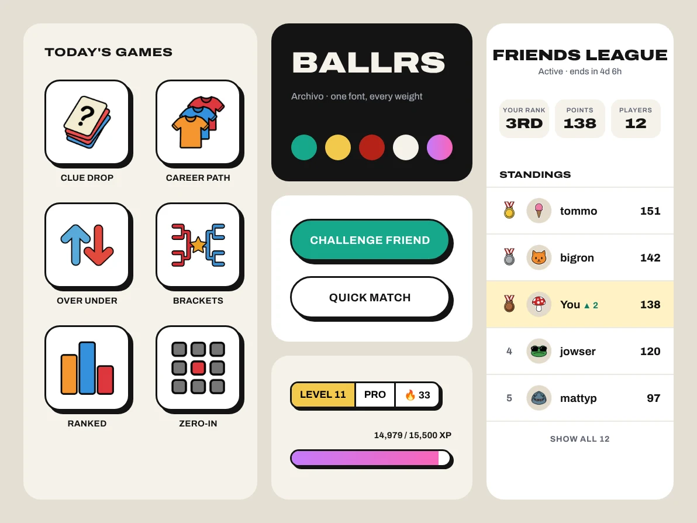
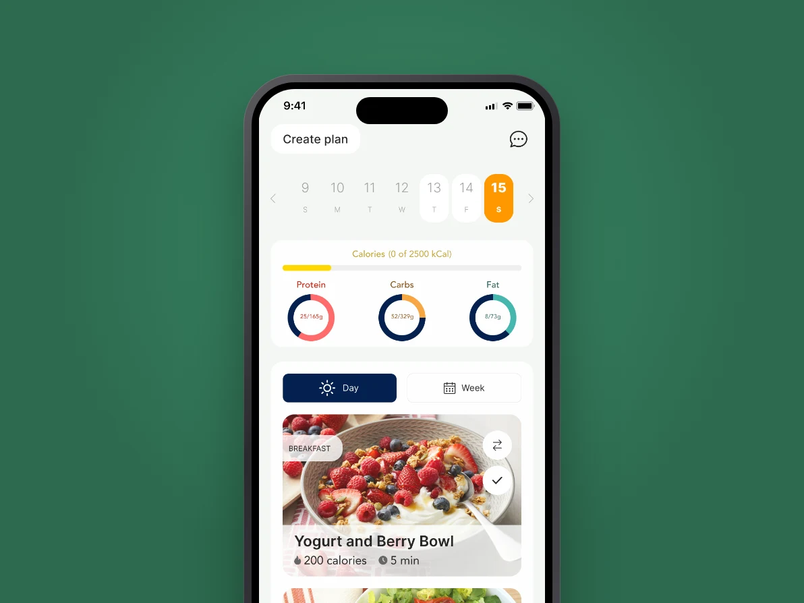
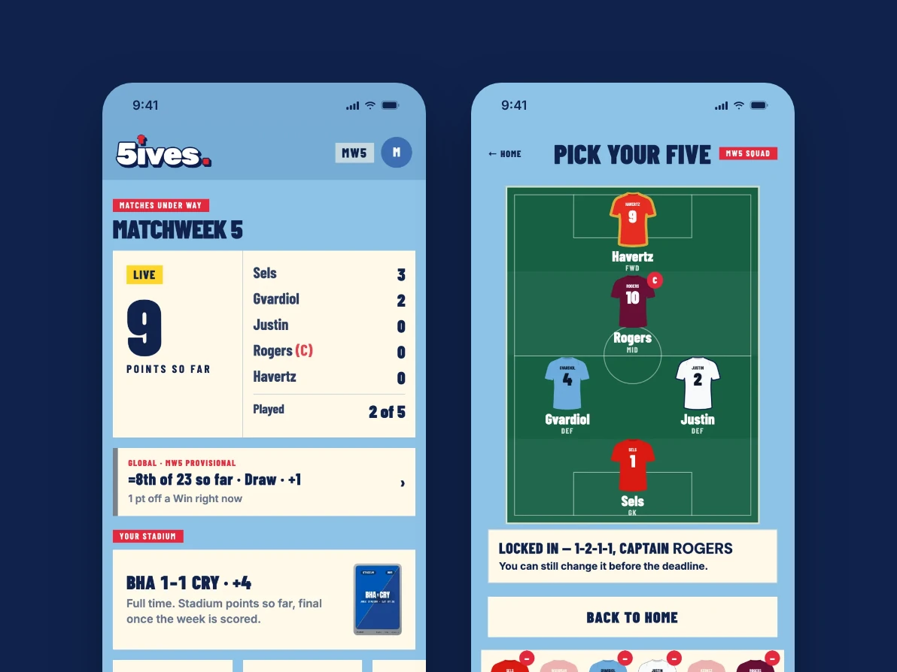

90 seconds of what I’ve built
Seen, Ball Bearing, LEVEL, 5ives, Loupe, Sunset, Ballrs and Space Runner. I designed and built them, 5ives and Ballrs with a co-founder.
Case studies belowSelected work

JetSweat
Freelance Product Designer · 3 months · B2B dashboard
Redesigned the dashboard for a B2B fitness studio platform, plus free trial onboarding and a site builder.

Sunset and Loupe
Two Mac apps · Designer and developer

Seen
Designer and developer · iOS and Android · Live
A film and TV tracker where your recommendations come from friends, not an algorithm. Researched with 5 interviews and 54 survey responses.

Ballrs
Designer and developer · 2025–now · Daily sports trivia app
Designed, built and shipped a daily sports trivia app with a co-founder, then redesigned it around one design system.

MealMatch AI
Lead Designer · 2024–26 · AI meal planning app
Led design on an AI meal planning app from research to App Store launch.

5ives
Designer and developer · Live web app · Fantasy football
A weekly Premier League card game, built on live match data.